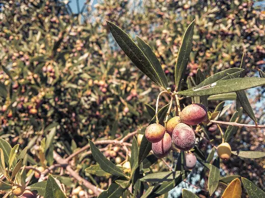

Feral olive
Feral olive is a wild fruit you can forage from April to June in Temperate south-east and South-west. Silver-leaved olive trees run wild through the Adelaide Hills, Victoria and WA.

When is feral olive in season in Australia?
Feral olive is usually in season April to June. Timing shifts with weather, latitude and altitude.
Where does feral olive grow in Australia?
Feral olive grows in Australian Capital Territory, New South Wales, South Australia, Victoria, Western Australia. Regions: Temperate south-east, South-west.
How do you recognise feral olive?
Silver-leaved olive trees run wild through the Adelaide Hills, Victoria and WA.
How do you harvest feral olive?
Pick only fully ripe fruit that comes away easily, into a shallow container so it doesn't crush. Leave plenty on the plant for birds and wildlife.
How do you eat feral olive?
Cure in brine for months before eating; raw olives are inedibly bitter.
How do you store feral olive?
Brine-cure.
What is feral olive good for?
Fat.
What can you cook with feral olive?
- Home-cured olives: Wild olives cured in brine for months.